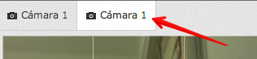

Esta ventana está capturando el video del equipo para compartirlo con huayra-motion.
Seleccioná "permitir" en la barra superior para continuar, y luego tendrías que ver la cámara en la pantalla de huayra-motion:

Para finalizar la captura, solo cerrá la ventana.